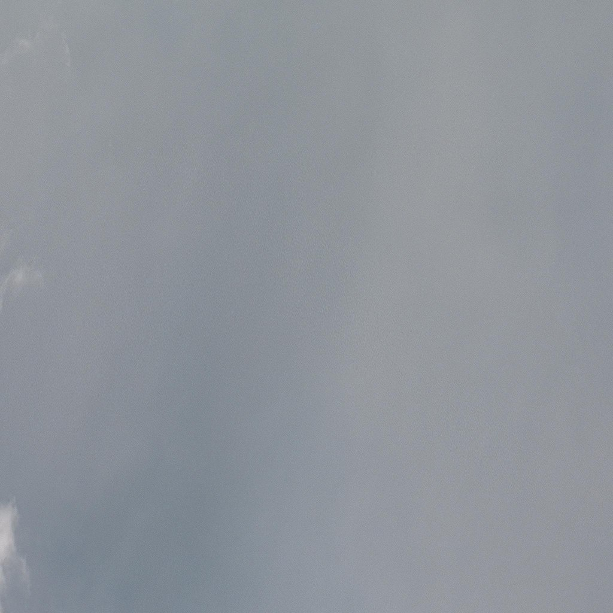
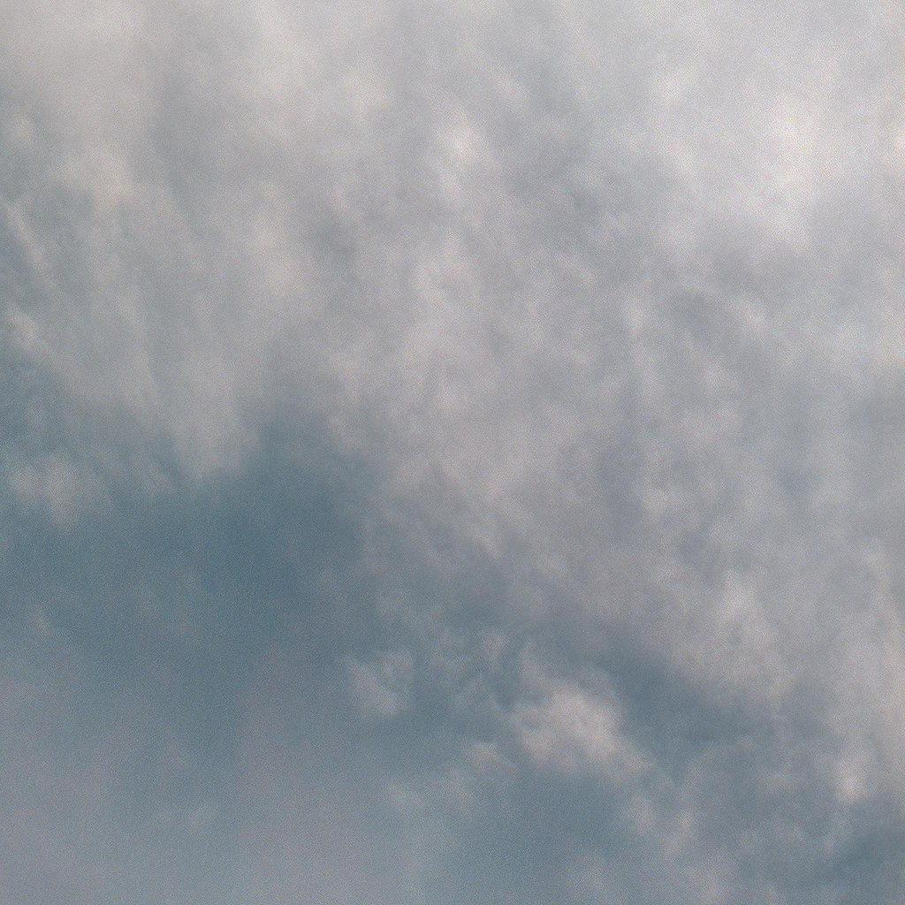
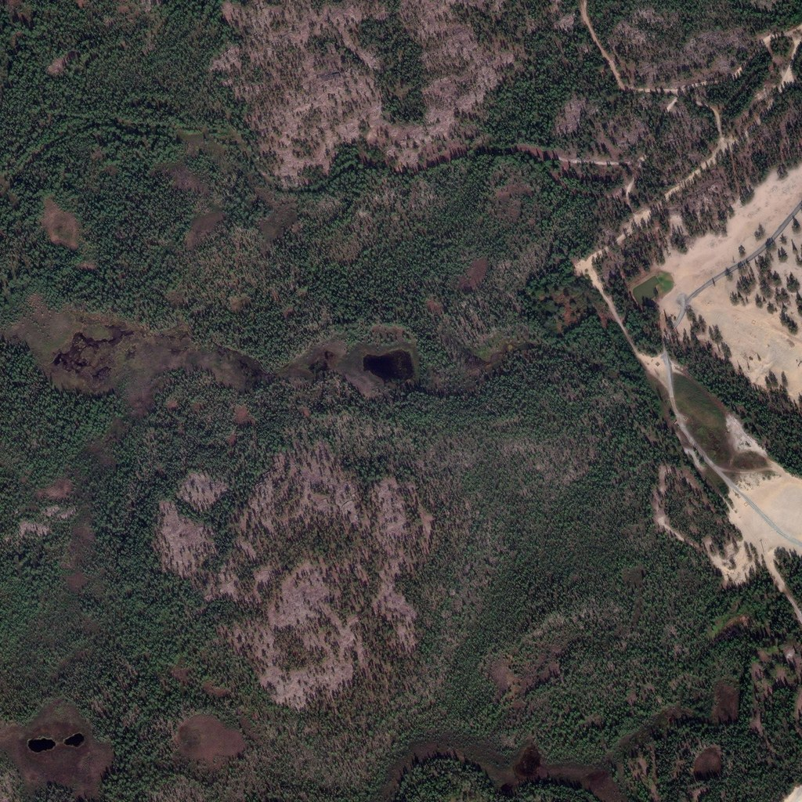

We compare four classical image-processing rules with a pretrained deep-learning model on 30–50 cm imagery from the 2023 Canadian wildfires, scored against cloud masks we checked by hand.
Clouds hide the ground in optical satellite images, and anything built on top of those images (damage maps, change detection, object counts) goes wrong where they're missed. So finding cloudy pixels is usually one of the first steps in an imagery pipeline.
Most cloud detectors were built for 10–60 m imagery like Landsat and Sentinel-2. We want to know how simple RGB rules and an off-the-shelf model hold up at 30–50 cm, where you can see single houses and cars, and where there is no existing ground truth to check against.
Three crops from our test set that show the cases we care most about.

test_01_c1
test_03_c1
test_12_c1